- Rações
Nós, do Petshop da Belinha, temos à venda as rações das melhores marcas do mercado, dentre elas:
- Rações para cachorro
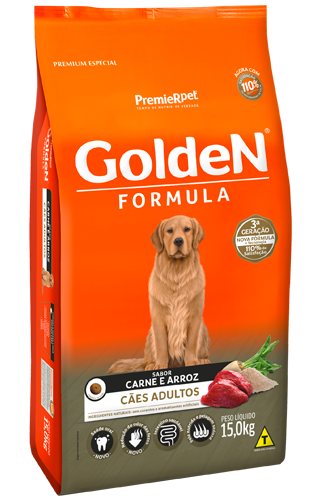
Imagem meramente ilustrativa
-
As rações vendidas em nossas lojas são das melhores marcas no mercado, de extrema qualidade e garantem uma dieta balanceada e saudável para seu cachorro.
- Rações para gato
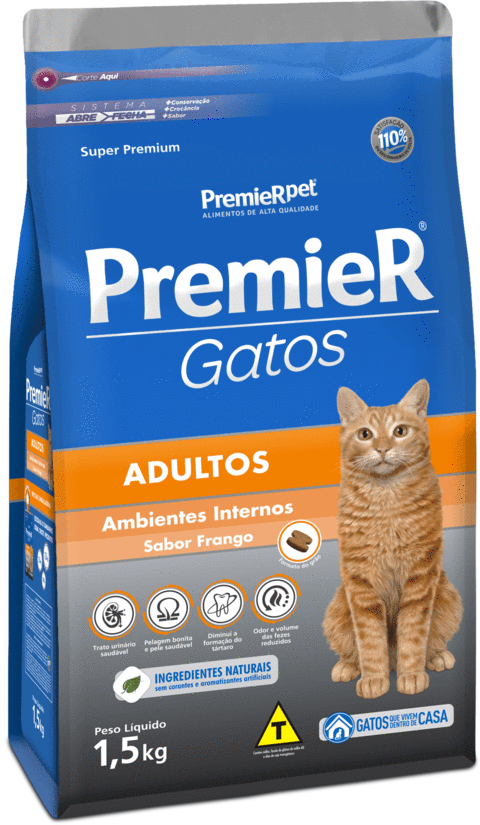
Imagem meramente ilustrativa
-
As rações de gato, por sua vez, também são de máxima qualidade e excelência, fazendo com que seu bichano fique saudável e feliz.
- Rações para tartarugas e jabutis
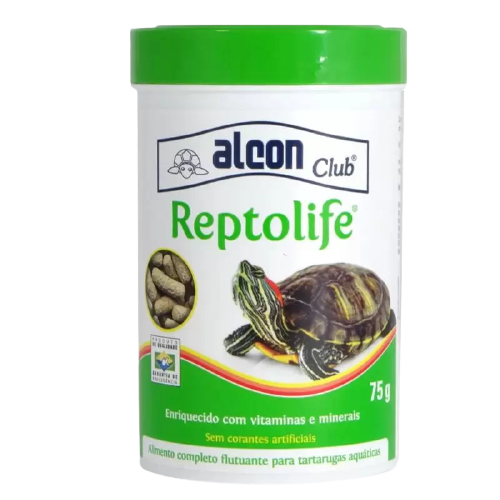
Imagem meramente ilustrativa
-
As rações para tartarugas e jabutis que vendemos garantem que seu amiguinho fique saudável, até porque, por mais que eles tenham um casco duro, eles também são sensíveis.
← Voltar ao início
- Remédios
Os nossos remédios são de extrema eficácia, para que seu pet melhore o mais rápido possível e volte a viver bem e com saúde.
- Vermífugo
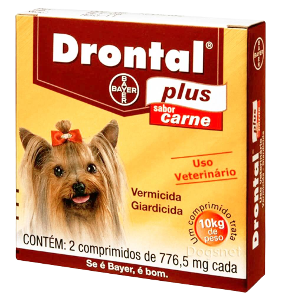
Imagem meramente ilustrativa
-
Os vermífugos são essenciais, tanto para seu cachorro, quanto para seu gato, principalmente nos primeiros dias de vida.
Caso seu cachorro esteja comendo coisas inadequadas, leve-o ao veterinário para realizar um check-up, pois pode ser que seja problema de vermes.
- Remédio para pulgas, carrapatos e sarnas
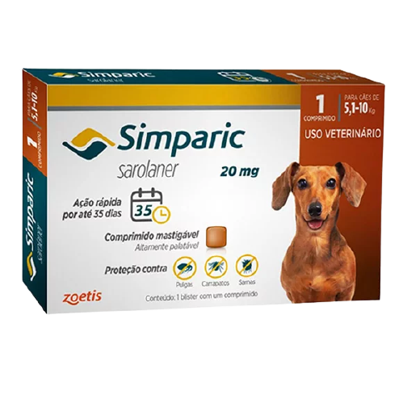
Imagem meramente ilustrativa
-
Já os remédios para pulgas e pulgas e carrapatos são para caso seu pet tenha algum desses parasitas. Além de prejudicar a saúde dele, os parasitas podem ser transmitidos para nós, seres humanos. O Carrapato, por exemplo, pode causar a Doença do Carrapato, que gera uma infecção forte, tanto nos animais quanto nos seres humanos.
← Voltar ao início
- Brinquedos
Os brinquedos para pet têm diversos benefícios, como fazer o pet praticar exercícios, fazer ele se sentir menos entediado, fazer ele se divertir e para passar o tempo.
- Ossos para cachorro
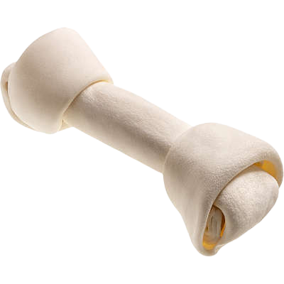
Imagem meramente ilustrativa
-
Os ossos são essenciais para os cachorros, principalmente para os filhotes. Isso ocorre porque a gengiva deles coça, e para matar a necessidade, eles saem mordendo tudo o que veem pela frente, por isso é ideal dar algo adequado e saudável para eles morderem.
- Arranhadores para gato
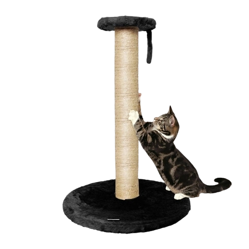
Imagem meramente ilustrativa
-
Os arranhadores disponíveis nas nossas lojas são extremamente benéficos para seu gatinho, ajudando eles a melhorar o comportamento, a cuidar das unhas deles, a diminuir o estresse e a se divertirem.
- Bolinhas para hamster
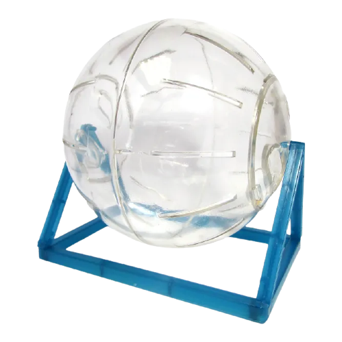
Imagem meramente ilustrativa
-
Assim como os gatos e os cachorros, os hamster também precisam fazer exercícios, e a bolinha é essencial para eles se divertirem, queimar calorias e diminuirem o estresse.
← Voltar ao início
- Utensílios
Os utensílios são importantes para cuidar de qualquer bichinho, pois eles são meios de te ajudar a cuidar dele. Aqui no Petshop da Belinha temos todos estes produtos listados
- Pote de comida e bebedouro
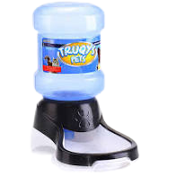
-
Potes de comida e de água são essenciais. Mas no caso deste produto, o pote de água tem a possibilidade de ser acoplado a uma garrafa ou a um galão pequeno d'água.
Desta forma, seu pet não ficará com sede ou com fome enquanto você estiver fora.
- Guia para cachorro
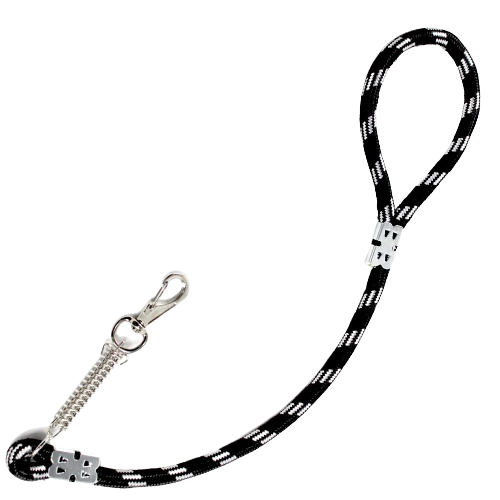
Imagem meramente ilustrativa
-
Mas, caso você queira levar o seu bichinho com você, nós também temos guias para que o passeio seja confortável e prazeroso tanto para você quanto para ele.
- Coleira
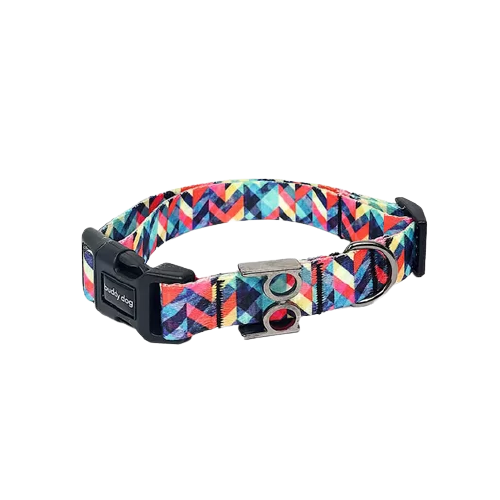
Imagem meramente ilustrativa
-
Caso você queira uma coleirinha para identificar seu cachorro ou seu gato, nós também temos! As coleiras ajudam tanto na estética quanto na identificação do animal.
- Casinhas para cachorro
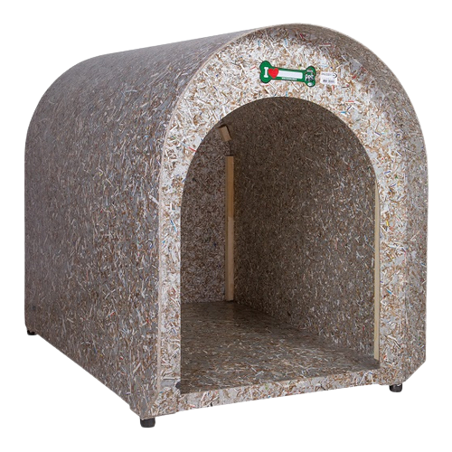
Imagem meramente ilustrativa
-
Para o seu melhor amigo ter um lugar confortável e quentinho, é recomendado comprar uma casinha e posicioná-la num local que não entre vento, para que o cachorro não passe frio
- Casinhas para gato
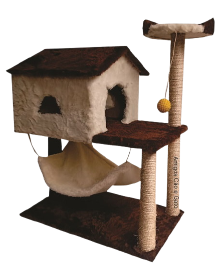
Imagem meramente ilustrativa
-
Da mesma forma, os gatos precisam de um local aconchegante para dormir. Além de uma casinha, este produto ilustrado na foto é um arranhador também, logo, é 2 em 1.
← Voltar ao início
- Petiscos
Além da ração, os petiscos são importantes para manter uma dieta saudável e suprir alguns nutrientes que não estão na ração. Aqui, no petshop da Belinha, nós temos diversos petiscos, todos de qualidade, para o seu animalzinho.
- Petisco para cachorro
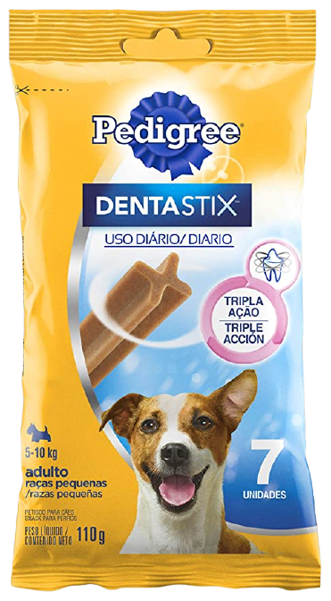
Imagem meramente ilustrativa
-
Os petiscos, além de serem saudáveis para o cachorro, são deliciosos e ainda combatem a formação de tártaro e o mau hálito.
- Petisco para gato
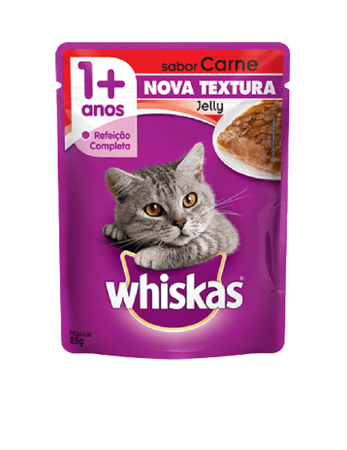
Imagem meramente ilustrativa
-
Para os gatos, temos petiscos que equivalem a uma refeição completa e fabricados pelas melhores marcas disponíveis no mercado, para que seu gato tenha uma dieta balanceada.
← Voltar ao início